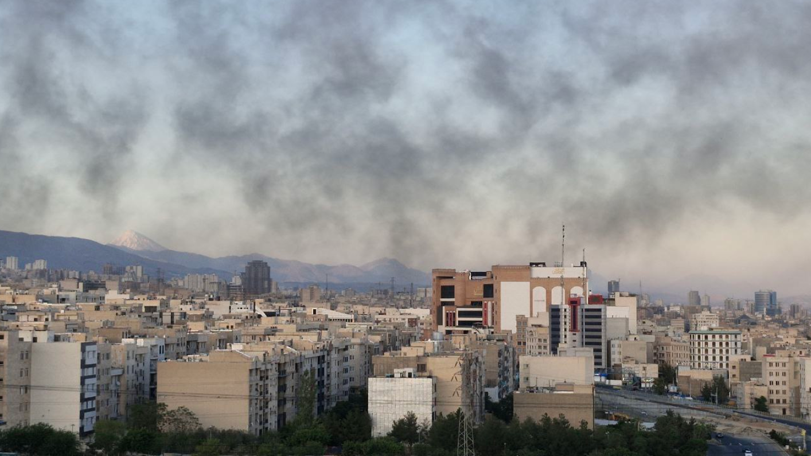

Writing about death isn’t easy. Writing directly about death is hard. Speaking to death is poetic. Accepting death—and admitting it in front of your own parents—is courageous. I think about these things when I come to myself and notice my eyes seem a little wet. When I’m sitting in the light room. Lily’s mother and father are sitting in front of me. There’s a glass between us. And between Lily’s parents, I see Lily and Janus*, Lily’s two-faced and faceless puppet. They are playing / performing together. Janus is telling Lily how they would like to go: The image of ideal deathbed: “A bed in the forest. If my medical condition makes that impossible, then in a room with big windows, where I can feel the breeze on my skin.” And the details go on, more than just an ideal bed for dying. The puppet asks Lily to promise that she’ll cry when the puppet dies: “I want you to cry. You need it. And I want you not to hide it from me. You all should not hide it from me. I want to see you cry.” This is the second vignette from the performance Pushing Up Daisies; A poetic twist on someone who’s died and is now under the earth, with daisies growing from their corpse. Today it’s been almost a month since that performance. And it’s been eleven days since war broke out in my country— the country where I was born and raised. It’s hard for me to believe. The problem with loss, and now with war, in the diaspora is the lack of any physical markers. Everything happens on a phone screen, on a television screen, behind a phone call. And the inner collapse, torn apart by grief, is in complete contradiction with how things outwardly seem normal. The friction is in self, inside and outside. Mind and the skin. Every day I think—again and again—about the city I grew up in, now being bombed. About the people I love. About the houses that are now empty. About the people who are gone. About the homes that have been destroyed. As of this moment—June 22, 2:05 AM Amsterdam time— amid the statistics that don’t make it out, I could find just one number: 865. And every night, every morning, right now, Iran is being attacked. I am being attacked from inside, unlike the world around me that is calm. ⸻ In the first vignette, American Yoga, one face of Janus is having a crisis about the death of the other and has a dialogue with the other side: People die every day and nobody talks about it. because it makes people uncomfortable. It makes me uncomfortable. It’s obviously ruining the day. You should find some distractions. Life is about distractions. Like this, the workout, or what we’re going to eat for lunch. But… but these people… They’re not even your neighbors. They don’t have to be my neighbours. (starting to sob) You have to stop this now. It’s too late to worry about it when it happens to your neighbor, Janus. And is life really about distractions? I was blinded too. I felt war was far far away, I grew up with the threat of a war that never happened. But this is the worst nightmare I’ve ever experienced. The war has knocked on my door, and I am not even there. Everybody being in danger, and having no order, no control over the situation, that’s the worst part of war. War makes people passive. Waiting. Expecting the next spot. It’s not like the days, when people fought with their bodies anymore. Missiles and drones are in hand of men who can’t control their greed. It’s male childishness and most recent military toys. Has it been like this before, Janus? They can’t think. They can’t see. I’m happy that I’m sensitive about this now, but I’m sad that this is really happening. We all should fight for justice, injustice for one is injustice for all, Janus. It’s just a matter of time. ⸻ * Janus is the Roman god with two faces. This name is written on the collar of the stray puppy Lily found in the trash. A puppy that was sleeping— and Lily breathed life back into it. Janus is the God of beginnings and endings, transitions, gates, doorways, and passages.
